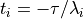
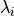
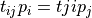
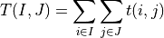
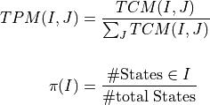

MSM module¶
This is a module to build Markov State Model, and analyze the trajectories, and this moudle contain serveal files, mod_global, markov, tpt, tram, cluster,**tpt** and the main program msm, and module’s function will explain next.
mod_global¶
This module defines some function we need later to prepare for building MSM.
-
mod_global_mpiinit()¶ To initialize the mpi. Include mpi module for fortran, and from this we could find how many process number we have used.
-
mod_global_readtraj()¶
Read the trajectory from file, note there must be a msm.in file, which has trajs namelist, and trajs namelist has following variables
- trajdir string, trajectories’ path, it can be relative path or absolute path
- trajtype integer, it has two values
- 1 which is the atom’s coordinates, which has Amber coordinates format(not include NETCDF format).
- 2 which is the collective variable, such as (psi, phi) angle , rmsd, radius of gyration or anything else
- arcfiles string, trajectory’s file name. It can contain several names which append together
- kelvin0 real, the temperature that we produce this traj, this variable will be used in the ….
After processing this function, we get some variables that useful for later use
- traj 2 dimensional real array. If trajtype is 1, then it’s coordinates of atoms, the 1st index is the degrees of atoms(always atomnumber*3), 2nd index is the frame index. If trajtype is 2, then the cv’s data will be read into this array, which 1st index corresponding to the dimensional of cv, and 2nd index corresponding to the frame index.
- trajindex 1 dimensional integer array. Because trajectories are generated from REMD, the trajectories are not continuum, we use this variable to separate each turn’s trajectory.
- cvs 2 dimensional real array. The 1st index is the dimension of cv, 2nd index is the frame index. If trajtype is equal 2, cvs is equal traj.
- snappot 1 dimensional real array. Record each frame’s potential.
This function supports mpi, which can use multiple process to handle data file. At last, we gather all above variables to root process for later use.
mod_cluster¶
This module using kmeans algorithm to cluster data into several microstates
-
mod_cluster_kmeans()¶ -
.........
-
mod_cluster_snap2cluster()¶ -
.......
-
mod_cluster_writeclusterinfo()¶ Write cluster information into clusterindex.txt file and clusters.txt file . The clusterindex.txt file has following meaning. First line has three integer numbers, which respond to the cluster number, the frames(snapshot) number, continuum trajectory number. Then following part is the data sheet. The 1st column is cluster index, the 2nd column is the maximum cluster index, the 3rd column is the number frames in that cluster, the 4th column is the frames index which is corresponded to the center of cluster. The final columns are the CVs corresponded to center of cluster. The data file has the example of
100 1000 11 1 21 21 450 5.012 7.324 2 32 11 369 8.051 8.947 3 47 15 427 6.085 7.350 4 59 12 533 7.669 9.029 … … … … … … The clusters.txt is a data sheet, which is the relationship between frame index and cluster. The 1st, 2nd, 3rd, 4th, 5th are correspond to frame index, continuum trajectory index, potential , cv1 and cv2. Which has following form:
450 10 -260.595 5.012 7.324 223 10 -233.671 4.826 7.502 227 10 -251.737 4.715 7.268 871 7 -192.628 5.140 7.167 876 7 -240.867 4.870 7.278 877 7 -204.301 5.078 7.361 … … … … … Notice the clusterindex.txt file and clusters.txt file has connection that the ith - jth row of clusters.txt file which included in a cluster correspond to continuous maximum cluster index of clusterindex file. For example, the continuum two number of maximum cluster index 21,32 correspond to the 21th - 32 th(21 th not include, 32 th include) row of cluster.txt file which belong to a cluster.
-
mod_cluster_readclusterinfo(icluster, onlycenter)¶ Parameters: - icluster – input, integer. which cluster’s pdb will be write into file
- onlycenter – input, bool, optional. if true, write only cluster’s center pdb and vice versa.
not true pdb format, maybe delete it later.
mod_markov¶
This module build markov state model, and support some tools to check whether the model has been build well.
-
mod_markov_task1_impliedtimescale_vs_lagtime()¶ This function requires a FSATOOL3_msm.in file which need a searchlagtime namelist. The namelist contains following variables
lagstepstart int start lag time
laginterval int lag time interval
lagstepstop int end lag time
ifdetailed bool, If true, build markov state model using maximum likelihood
After processing this function, we can obtain a file called implied_timescale_log.txt which represents the lag step, the cluster number in this lag time, transition matrix’s size, lag time, and the implied timescale from 2rd to 10th in each column The implied timescale can be computed by the transition matrix’s eigenvalue, which has the form

the  is the eigenvalue of MSM estimated which calculated by
mod_markov_tpm_solve_eigenproblem()at lag time
-
mod_markov_buildtcm_fromclusters(ifdetailed, sparsetcm)¶ Parameters: - ifdetailed – input, optional, bool If true, build markov state model using maximum likelihood
- sparsetcm – input, optional 2d real array
Build transition count matrix, if the transition count matrix has the ith row which sums to 0, then we remove this ith row. Ifdetailed is present and true, then we call
mod_markov_symmetrizetcm_and_normalizetpm()function to get transition probability matrix(tpm) and equilibrium probability(pi). And ifdetailed is present and false, we use the format (tcm(i,j) + tcm(j,i)) / 2 to derive tpm and pi, else we only use tpm = tcm(i,j) / sum(tcm(i, :)) to get tpm and sum(tcm(i, :))/sum(tcm) to get pi.
-
mod_markov_symmetrizetcm_and_normalizetpm()¶ This function use maximum likelihood estimation method to get tpm and pi. In this way, the detailed balance is satisfied.

So this method is recommended for building tpm, See [CNo10] for details.
-
mod_markov_build_coarsetpm_from_tcm()¶ Build tpm and tcm from macrostates, we only use the simple algorithm that

which
 is macro tcm, and t is micro tcm.
And the tpm and pi is calculated by
is macro tcm, and t is micro tcm.
And the tpm and pi is calculated by
-
markov_tpm_solve_eigenproblem(ifonlytimescale)¶ Parameters: ifonlytimescale – input, optional, bool ifonlytimescale is true, only calculate implied timescale for mod_markov_task1_impliedtimescale_vs_lagtime(). Else, calculate eigenvalue, implied timescale, and pi for MSMThis function use LAPACK to solve the eigen problem which use dgeev subroutine to find the eigenvalue. what’s meaning of tperror, why deal with the rest?
-
markov_bace()¶
-
mod_markov_writestateinfo()¶ It’s better to put these function into a Module which deal with file specificity.
-
mod_markov_writestatepdb()¶ It’s better to put these function into a Module which deal with file specificity.
| [CNo10] | John D. Chodera and Frank Nó. Probability distributions of molecular observables computed from Markov models. II. Uncertainties in observables and their time-evolution. J. Chem. Phys., 2010. doi:10.1063/1.3463406. |